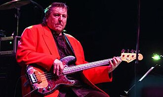

Bob Babbitt
Robert Andrew Kreinar, known as Bob Babbitt, was an American bassist, most famous for his work as a member of Motown Records' studio band, the Funk Brothers, from 1966 to 1972, as well as his tenure as part of MFSB for Philadelphia International Records afterwards. Also in 1968, with Mike Campbell, Ray Monette and Andrew Smith, he formed the band Scorpion, which lasted until 1970. He is ranked number 59 on Bass Player magazine's list of "The 100 Greatest Bass Players of All Time".